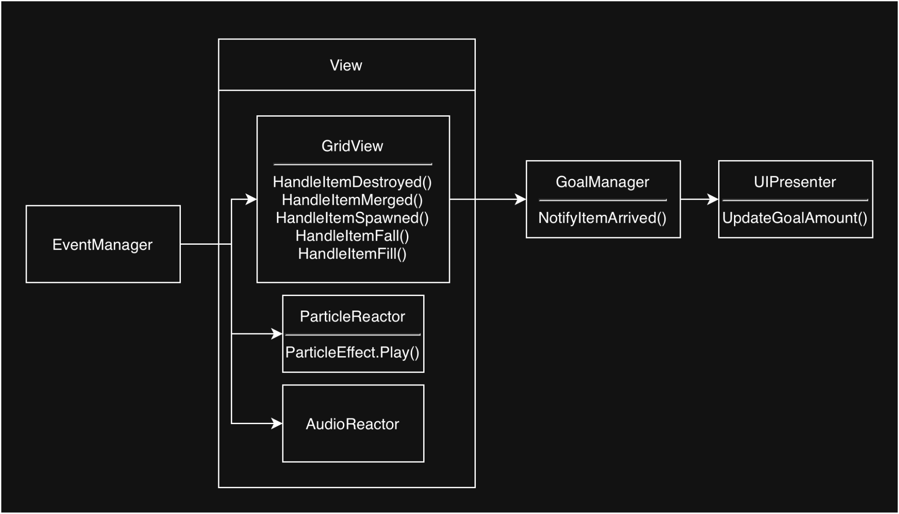

1. Design Pattern and Code Architecture
When designing the code structure, the Separation of Concerns principle must be applied. The architecture is primarily divided into two main layers: Logic and View. Communication between these layers is established via Event structures. While different design patterns are used in specific situations, the overall architecture strictly follows the MVC/MVP paradigm.
The Logic layer is written in pure C# and is completely isolated from UnityEngine. The View layer, on the other hand, uses the MonoBehaviour class structure to create the visual layer the player sees on the screen. These two structures are connected via Controller/Presenter architectures.
1.1. Folder Structure
1.1.1 Logic
The file structure of the Logic layer is divided into five main parts: Grid, Items, Logic Interfaces, Systems, and Builders & Factories.
- Grid:
GridPosition: A struct written to easily locate and process positions on the grid during gameplay.Cell: Represents each distinct cell on the grid, holding aGridPosition, Item type, and a list of Neighbors.Grid: Contains a 2D matrix of cells built according to the row and column values for each level.
- Items: Contains classes like
Cube,Duck,Balloon,ColoredBalloon,Box, andRocket. All implement theIGridIteminterface, but they can possess different variables or methods by implementing different secondary interfaces. - Logic Interfaces: Contains interfaces like
IBottomCollectable,IColored,IDamageable,IFallable,IFlyableToGoal,IGridItem, andIMatchable. These distribute specific properties across items (e.g., Duck hasIBottomCollectablebut notIColored). Interfaces likeIFallSystem,IFillSystem,IMatchSystem, etc., are also kept here for dependency injection. - Systems: Contains 5 classes:
FallSystem,FillSystem,MatchSystem,RocketSystem, andBottomCollectSystem. Each handles its respective logic on the board. - Builders & Factories:
ItemFactory: A static class responsible for creating item objects. Acts as a factory during the Fill process with methods likeCreateRandomItem().LevelBuilder: Responsible for setting up the Grid at the start of the game based onLevelData.
1.1.2 View
- Grid:
GridView: Listens to logic events and manages how grid visuals react.ItemView: Represents the visual counterpart of grid items in the scene and manages their animations.RocketView: Inherits fromItemViewto specifically manage the unique visual structure and animations of the Rocket.
- UI:
UIPresenter: Manages the creation of Goal UIs and tellsGridViewwhere goal items should fly.GoalUIItem: The class for the visual goal prefab on screen, handling its reactions and animations.GoalFlyTarget: A struct storing the position and scale of the target.
- FeedBack: Includes
ParticleReactor,ParticleEffect, andAudioReactorto listen to events and play the correct visual effects and sounds. - Infrastructure: Includes
ItemViewFactoryfor instantiating visuals andItemPoolfor pooling item prefabs to avoid costly Instantiate/Destroy loops.
1.1.3 Managers & Controllers
GameManager: Acts as the Composition Root and manages player clicks via events.GridController: Manages the Match/Fall/Fill processes asynchronously on the logic side, directing the flow of the game.GoalManager: Holds and updates logic variables like goals and remaining moves.InputManager: Converts screen clicks to world positions and sends them to the system.EventManager: Allows data flow between Logic and View layers without direct references.
1.1.4 ScriptableObjects
- Data & Database:
LevelData: Holds goals, moves, rows, columns, and a custom inspector gridLayout matrix.GameSettingsData: Configurable parameters for animations, cell width, grid offset, etc.AudioDatabase: Holds the audio clip data.ItemDatabase: A list ofItemDefinitionscriptable objects to centralized item creation logic.
- Item Definitions:
ItemDefinitionholds logic type, color, sprite, and prefab data for items.
1.1.5 Algorithm & Enums & Utils
MatchFinder: Uses Breadth-First Search (BFS) to find match groups.Utils: Static class for math and Unity conversion helpers.Enums: Standardized types likeItemColor,RocketOrientation,DamageType.
1.2 Data Flow
At the start of the game, GameManager.Awake() sets up the dependency injection and starts necessary functions to build the scene. The dependency injection flow occurs in the following order:

Simultaneously, GameManager listens to events from InputManager via the HandleClick() function, which triggers the logic within GridController. The system flow happens as shown below:

The ProcessClick() function in GridController processes the click, firing necessary events. Observers attached to these events then execute the required actions for the visual layer.
1.3 Core Mechanics & Algorithms
1.3.1 GridController.ProcessClick()
This asynchronous method processes player input step-by-step:
- Ignored Items: Uses delegate injection to fetch
ignoredItemsfrom the view, preventing matching calculations on items that are currently moving or animating. - Validation: Calls
CanProcessClick()to ensure the clicked object is valid and not moving. - Affected Columns: Creates an
affectedColumnlist to target only specific columns for fall/fill instead of scanning the entire board. - Execution: Calls
ActivateItemAsync(). If it's a Rocket,RocketSystem.ActivateRocketAsync()is executed, managing chain reactions viaHandleChainReaction(). If it's a regular match,MatchSystem.Match()is called. - Fall/Fill Loop: A
do-whileloop callsRunFallFillLoopAsync()as long asaffectedColumnhas elements. After falling/filling,BottomCollectSystem.CollectAsync()checks if items like Ducks have reached the bottom. If they have, they are collected and the loop continues to refill the grid.
1.3.2 MatchSystem & MatchFinder
- MatchSystem: Calls
MatchFinder.FindMatch()to get matching cubes. If valid, it triggersClearMatchCells()to destroy or merge items, andDamageNeighbors()to apply damage to adjacent obstacles (like Boxes) implementingIDamageable. - MatchFinder: Uses a Breadth-First Search (BFS) algorithm with
HashSet(for visited nodes) andQueuecollections. It queues the clicked cell, searches neighbors for matching colors, and loops until the entire connected group is found.
1.3.3 Fall & Fill Systems
- Fall System: Iterates through affected columns starting from the bottom row, using a two-pointer approach to pull falling items down.
- Fill System: Iterates from the top row downwards. When it finds an empty cell, it generates a random item and triggers the fill event.
1.3.4 RocketSystem
The ActivateRocketAsync() method processes the rocket's movement. It uses a distance parameter and an activeDirections list to advance cell by cell in two directions. Thanks to Task.Delay(), it waits based on settings defined in GameSettings, applying ApplyDamage() to each cell. This allows rockets to trigger chain reactions on other items.
1.3.5 BottomCollectSystem
Asynchronously collects items like Ducks that fall to the bottom row. It checks the bottom-most item of affected columns, and if it has the IBottomCollectable interface, it triggers collection, pausing briefly via Task.Delay() to sync with animations.
1.3.6 Goal & Spawn-Quota System
Managed by GoalManager. When generating the board, if the required target amount of an IFallable object is not met on the grid, the remaining amount is tracked as a quota. The CreateRandomItem() factory method consumes this quota during Fill operations to ensure the player has a chance to complete the goals.
1.4 View Layer
The View layer operates on an event-driven queue system via GridView and ItemView.
- GridView: Holds a
viewDictionarymappingIGridItemlogic objects toItemViewvisual objects. It also maintains aHashSetofanimatingItems. It provides theGetAnimatingItems()delegate to theGridControllerto lock player input when necessary. - ItemView / RocketView: Manages visual animations via a queue to ensure they play sequentially. It broadcasts state changes via
OnAnimationStateChanged.
2. Data Structures (Scalability)
The game's data structure is built on top of ScriptableObjects, allowing rapid expansion. To add a new item, a developer creates a new definition script inheriting from ItemDefinition, setting its Logic type, Sprite, and Prefab. This asset is added to the ItemDatabase.
GameSettingsData allows tweaking animation timing, delays, and fall speeds without touching code. Furthermore, LevelData integrates with a custom Unity Editor inspector, enabling level designers to visually paint the 2D grid matrix directly within Unity.